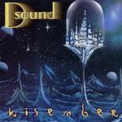

Home Artist links Label link

D Sound - Kisember
| Artist: | D Sound |
| Title: | Kisember |
| Label: | Stereo Periferic BGCD 108 |
| Length(s): | 57 minutes |
| Year(s) of release: | 2002 |
| Month of review: | [12/2002] |
Line up
Zsolt Dezsö Murguly - guitar, vocals, keyboards, bass
Adam Földes - drums
Csaba Varga - keyboards
Liza Vargéné Papp - vocals on 11
Tracks
| 1) | Budafok | 5.02
|
| 2) | Hold 1. | 5.28
|
| 3) | Blues 2000 | 4.39
|
| 4) | Kisember 6.22 |
|
| 5) | Hold 2. | 4.28
|
| 6) | Frog's Final Day 4.16@3:00 |
|
| 7) | Hold 3. | 5.27
|
| 8) | Sodoma | 5.28
|
| 9) | Otthon | 5.39
|
| 10) | Christine | 4.19
|
| 11) | Without Worlds | 5.31
|
Summary
D Sound is Zsolt Dezsö Murguly who after a time of searching setteled
down to record Kisember. The title track was inspired by Floyd's Division
Bell.
The music
Budafok I guess has something to with half of Budapest. It is a guitaristic
piece of work with both atmospherics and a nice melody line. Actually,
this is a very relaxed piece of work in which the Floyd feel is strongly
present. Later on, an Oldfield feel alsop enters the picture.
On Hold 1. the guitar sound is much rougher and we enter into space rock
territory with vagueish vocals in Hungarian. There are some really nice
deep space rock guitars and synths in here. Especially the telling synth line
is recognizable and will recur in future tracks.
Towards the end there is some piano dancing throughout lined by clear ringing
percussion. The pace stays high, althought the song ends in a low slow key.
On part three of the first movement, we return to the Floyd feel with
Blues 2000. Some strong guitar playing, not anything renewing of course,
especially since the stamp of Gilmour is indelibly present.
Again, the vocals are present and it should not come as a surprise that
D Sound in fact sounds a lot like the seventies side of Eloy, it has very
much the same floating atmosphere. Not a bad thing to sound like. Maybe
the guitars are a bit harder, but aren't we all. The concluding part
of Kisember is Kisember itself, with 6.22 the longest track on the album.
The spacey vagueness tries to hide that the vocals of Murguly are really
not that strong. The rhythms are a bit more modern here with
an occasional speed-up. It does seem the music has mainly programmed drums,
the groove is oft missing.
The second movement includes three tracks. The first of these starts off
with a complex guitarline, somewhat often repeated with slight variations.
This is the second Hold track. The vocals are as always a bit dreary,
comparable to those of for instance the Russian band Romislokus.
This is a rather up-beat track with some nice dancing keyboards in them
and plenty of energy. I like the music better this way. The drums still
sound a bit flat, though. The energy level stays high in the noisy
Frog's Final Day. The guitar and keyboards together paint here a picture
of reverberating sounds, with some pacey guitars and bleepy keys.
Later on, some of the ingredients drop out, but the reverb stays. I think
Murguly does this quite well. There is really a lot of repetition here, but
it fits. This is more industrial than prog though.
The final part of this movement in Hold 3. in which a noisy rhythm guitar
backs a trembling acoustic guitar. Later the powerful synth line returns.
This line is so recognizable and also gives the music a soundtrackish feel. A noisy
and up tempo one, but nonetheless. The dancing piano also returns towards
the end.
After all this noise we come to the loner Sodoma which is a quite a catchy
track. The drums are a bit automatic sounding to me. I guess this comes
quite close to say Steve Hillman, but including some Floydian atmospherics
in the middle. These parts are alternated with some more vocal parts.
I am not too fond of the vocals, but maybe I would have missed would I have
had to go with them. There is also a percussive middle part, after which
the staccato rocking guitar comes back in.
The final movement opens with Otthon. A ratehr lame beat on this one, with
a melody being laid over it. This simply goes on a bit. Plenty of guitar solo,
a bit of piano, and a gurgling bass. Get the picture?
Spacy synths open on Christine, after which the rock guitar comes fading in.
This is again an up-tempo rocker, repetitive and riff based. Here D Sound comes
off as a solo guitarist effort and that is not a good thing.
Clear eerie vocals ring out on Without Worlds. Pounding drums and some
aggressive guitar riffs set in then. The song ends with filmic keyboards.
Conclusion
What do we have: a guitarist, not a great vocalist who paints his sonic
pictures with references to Floyd, Eloy and well why not Hawkwind.
This means that the spaciness abounds, he knows how to rock, while in the
quieter parts the music becomes more atmospheric. There are some nice themes
in here (especially in the Hold tracks), but on the whole I get the impression
that Murguly lets his melody lines stay on a bit too long at times. The vocals
sound a bit dreary usually and I guess it is something you might have
to get used to. But didn't we all have to get used to Eloy's vocalist as well.
Not bad, but I am afraid that the input of others is sorely missed on this one.
Some of the themes stick, but not the tracks that they have been weaved
in to. Something that the music really lacks is a dynamic, groovy drum sound.
To me, it seems too much is on the automatic pilot.
© Jurriaan Hage